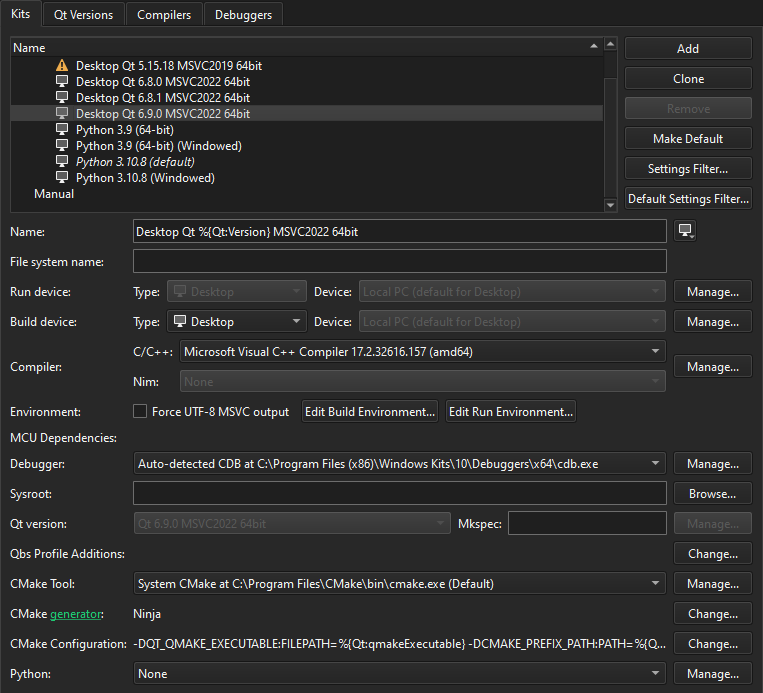

Kits
Set kit preferences. A kit consists of a set of values that define one environment, such as a device, toolchain, Qt version, and debugger command to use.
Typically, only a subset of the kit preferences is relevant for a particular setup. Therefore, Qt Creator plugins register sets of relevant preferences that you can view and modify in Preferences > Kits. For example, if you use CMake to build all your projects, you can hide Qbs and qmake preferences by default.

Filtering Kit Preferences
To hide and show preferences in the Kits tab for the current kit, select Settings Filter.
To view and modify the preferences displayed when you add a new kit, select Default Settings Filter.
Kit Preferences
The following table summarizes the available kit preferences.
| Setting | Value |
|---|---|
| Name | Name of the kit. You can use variables to generate the kit name based on the values you set in the other fields. Select next to the field, and then select the image that is displayed in the kit selector for this kit. Select Browse to select an image in a supported file format (for example, PNG). The image is scaled to the size 64x64 pixels. For example, using the compiler logo as an icon allows you to easily see, which compiler is used to build the project for the selected kit. |
| File system name | Name for the kit to use as a part of directory names. This value is used for the CurrentKit:FileSystemName variable, which determines the name of the shadow build directory, for example. |
| Run device | Type is the type of the run device, and Device is the device to run applications on. |
| Build device | Type is the type of the build device, and Device is the device to build applications on. |
| Emulator skin | Skin to use for the Boot to Qt Emulator Device. |
| Compiler | C or C++ compiler that you use to build the project. You can add compilers to the list if they are installed on the development PC, but were not detected automatically. For more information, see Add compilers. This setting is used to tell the code model which compiler is used. If your project type and build tool support it, Qt Creator also tells the build tool to use this compiler for building the project. Note: qmake ignores the value of this field and fetches the compiler information from Qt mkspec, which you can change. |
| Environment | Select Edit Build Environment to modify environment variable values for build environments in the Edit Build Environment dialog. Select Edit Run Environment to modify environment variable values for run environments in the Edit Run Environment dialog. For more information about how to add and remove variable values, see Edit environment settings. |
| Force UTF-8 MSVC compiler output | Either switches the language of MSVC to English or keeps the language setting and just forces UTF-8 output, depending on the MSVC compiler used. |
| Debugger | Debugger to debug the project on the target platform. Qt Creator automatically detects available debuggers and displays a suitable debugger in the field. You can add debuggers to the list. For more information, see Add debuggers. |
| Sysroot | Directory where the device image is located. If you are not cross-compiling, leave this field empty. |
| Qt version | Qt version to use for building the project. You can add Qt versions that Qt Creator did not detect automatically. For more information, see Add Qt versions. Qt Creator checks the directories listed in the mkspec is the name of the mkspec configuration that qmake uses. If you leave this field empty, qmake uses the default mkspec of the selected Qt version. |
| Qbs profile additions | Select Change to add settings to Qbs build profiles. For more information, see Edit Qbs profiles. |
| CMake Tool | CMake executable to use for building the project. Select Manage to add installed CMake executables to the list. For more information, see Add CMake Tools. |
| CMake generator | Select Change to edit the CMake Generator to use for producing project files. Only the generators with names beginning with the string CodeBlocks produce all the necessary data for the Qt Creator code model. Qt Creator displays a warning if you select a generator that is not supported. For more information, see Using Ninja as a CMake Generator. |
| CMake configuration | Select Change to edit the parameters of the CMake configuration for the kit. |
| Python | Select the Python version for the kit. Select Manage to add Python versions. For more information, see Select the Python version. |
| Meson tool | Meson tool to use for building the project. Select Manage to add installed Meson tools to the list. For more information, see Adding Meson Tools. |
| Ninja tool | Ninja tool to use for building the project with Meson. Select Manage to add installed Ninja tools to the list. |
See also How To: Manage Kits, Add CMake Tools, and Edit Qbs profiles.